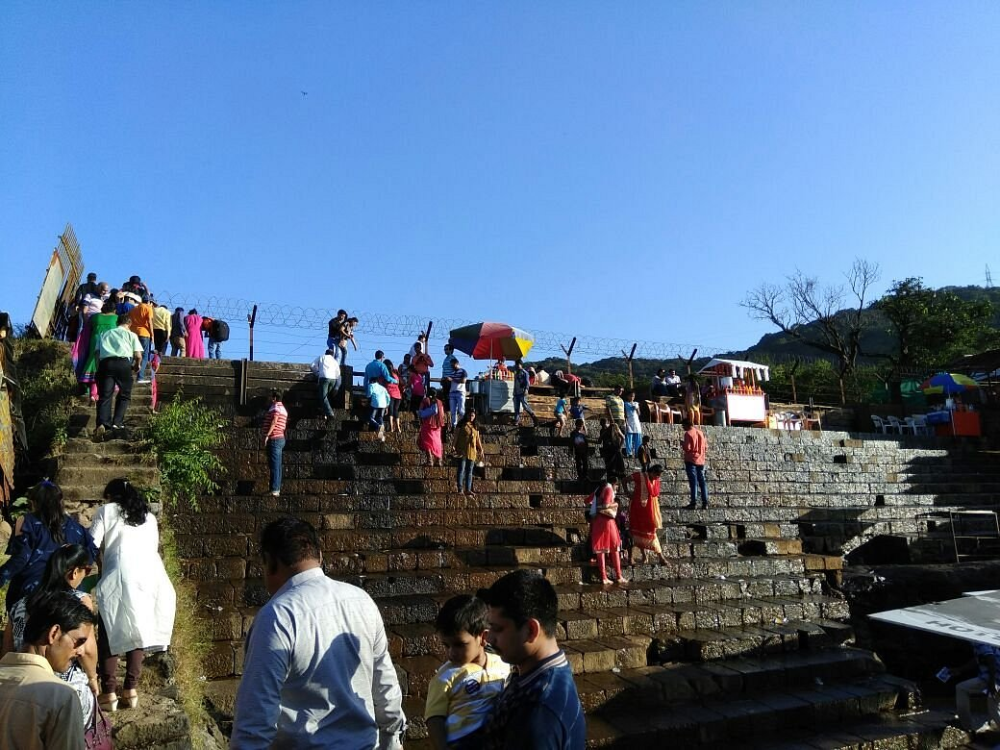
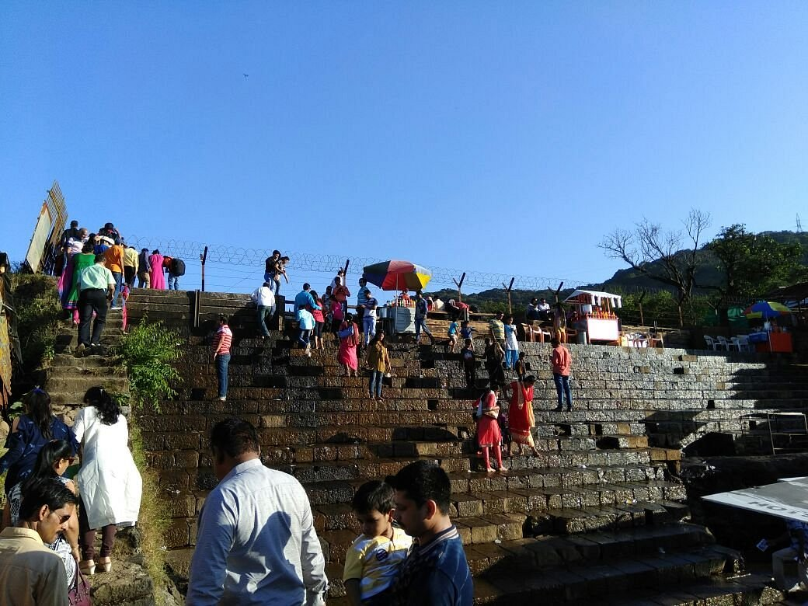

Lonavla
Karla Caves


1. Location: Karla Caves are situated near Lonavala, Maharashtra, India.
2. History: The Karla Caves date back to the 2nd century BCE and are one of the oldest Buddhist cave complexes in India. They served as a center for Buddhist worship and meditation.
3. Architecture: The caves feature intricate rock-cut architecture, with elaborately carved pillars, doorways, and stupas. They showcase the artistic and architectural prowess of ancient India.
4. Significance: Karla Caves hold significant religious importance for Buddhists and are considered a UNESCO World Heritage Site. They attract pilgrims, historians, and tourists interested in ancient Indian art and culture.
5. Tourism: Today, Karla Caves are a popular tourist destination, offering visitors a glimpse into India's rich cultural heritage. Tourists can explore the cave complex, admire the intricate carvings, and learn about Buddhist history and philosophy.
6. Accessibility: Karla Caves are easily accessible from Lonavala by road. Visitors can reach the caves via taxis, buses, or private vehicles. The journey offers scenic views of the Western Ghats.
7. Surroundings: The caves are surrounded by lush greenery and offer a serene environment for meditation and relaxation. Nearby attractions include other Buddhist caves, forts, and viewpoints.
8. Facilities: Facilities such as parking, restrooms, and souvenir shops are available near the caves for the convenience of visitors. Guided tours and informational signage provide insights into the history and significance of the site.
Overall: Karla Caves are a treasure trove of ancient Indian art and architecture, offering a fascinating journey through history. They are a must-visit destination for anyone interested in exploring India's cultural heritage.
Bhaja Caves


1. Location: Bhaja Caves are situated near Lonavala, Maharashtra, India.
2. History: The Bhaja Caves were excavated during the Hinayana phase of Buddhism and served as prayer halls and monasteries for Buddhist monks.
3. Architecture: The caves feature intricate carvings, sculptures, and inscriptions depicting Buddhist themes and motifs. They showcase the artistic and architectural skills of ancient craftsmen.
4. Significance: Bhaja Caves hold religious and historical importance as they provide insights into the spread and development of Buddhism in India. They are also considered a UNESCO World Heritage Site.
5. Tourism: Today, Bhaja Caves are a popular tourist attraction, offering visitors a chance to explore ancient cave architecture and learn about Buddhist culture and history. Guided tours and informational signage are available at the site.
6. Accessibility: Bhaja Caves are easily accessible from Lonavala by road. Visitors can hire taxis or use public transportation to reach the caves. The journey offers scenic views of the Western Ghats.
7. Surroundings: The caves are surrounded by lush greenery and offer a tranquil setting for meditation and exploration. Nearby attractions include other Buddhist caves, forts, and natural viewpoints.
8. Facilities: Facilities such as parking, restrooms, and refreshment stalls are available near the caves for the convenience of visitors. Local guides offer informative tours of the site, providing historical and cultural insights.
Overall: Bhaja Caves are an architectural marvel and a testament to India's rich cultural heritage. They offer visitors a unique opportunity to step back in time and experience the serenity of ancient Buddhist monastic life.
Lion's Point


1. Location: Lion's Point is located near Lonavala, Maharashtra, India.
2. Scenic Beauty: Lion's Point offers breathtaking panoramic views of the surrounding valleys, hills, and waterfalls. It is a popular spot for nature lovers, photographers, and picnickers.
3. Accessibility: Lion's Point is easily accessible by road from Lonavala. Visitors can drive or hire taxis to reach the viewpoint. The journey offers scenic vistas of the Western Ghats.
4. Activities: At Lion's Point, visitors can enjoy leisurely walks, take photographs of the picturesque landscapes, and relax amidst nature's beauty. The viewpoint is especially popular during the monsoon season when the surroundings are lush green.
5. Surroundings: Lion's Point is surrounded by verdant hills, dense forests, and cascading waterfalls, creating a serene and tranquil atmosphere. Nearby attractions include other viewpoints, trekking trails, and natural attractions.
6. Facilities: Basic facilities such as parking, restrooms, and refreshment stalls are available near Lion's Point for the convenience of visitors. Visitors are advised to carry drinking water and snacks, especially during peak hours.
Overall: Lion's Point is a paradise for nature enthusiasts, offering mesmerizing views and a peaceful ambiance. It's the perfect destination for a relaxing getaway amidst the natural beauty of Lonavala.
Bushy Dam

 

1. Location: Bushy Dam is situated near Lonavala, Maharashtra, India.
2. History: Bushy Dam was constructed in the 1860s to supply water for irrigation purposes and to generate hydroelectric power. It is one of the oldest dams in the region.
3. Structure: The dam is made of masonry and features a reservoir that collects rainwater during the monsoon season. It is surrounded by lush greenery and offers a picturesque setting for visitors.
4. Activities: At Bushy Dam, visitors can enjoy picnics, boating, and swimming in the reservoir. The dam also offers opportunities for trekking and nature walks in the surrounding hills and forests.
5. Accessibility: Bushy Dam is easily accessible by road from Lonavala. Visitors can drive or hire taxis to reach the dam. The journey offers scenic views of the Western Ghats and the surrounding countryside.
6. Surroundings: Bushy Dam is surrounded by lush greenery, dense forests, and cascading waterfalls, creating a serene and tranquil atmosphere. Nearby attractions include other dams, viewpoints, and natural attractions.
7. Facilities: Basic facilities such as parking, restrooms, and changing rooms are available near Bushy Dam for the convenience of visitors. Boating and picnic facilities are also available at the site.
Overall: Bushy Dam is a popular tourist destination, offering visitors a chance to relax amidst nature's beauty and enjoy various recreational activities. It's the perfect spot for a day trip or weekend getaway from Lonavala.